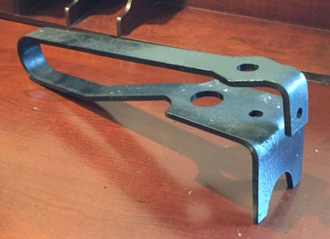
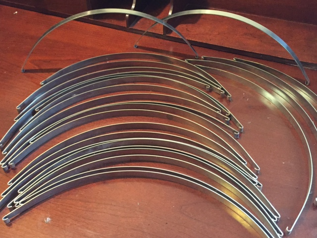

Products

Compression Springs
Compression springs are an open coiled spring that becomes shorter when a force is applied to it.
-
Compression Spring Three Coil Nest Typical Load Disbursement, 4/7 Outer Coil, 2/7 Middle Coil, 1/7 Inner Coil
-
Compression Spring, .204" dia. Phosphor Bronze for Marine Application
-
Compression Springs for Offshore Machinery Application
-
 Compression Springs for Towing Locomotives, .281" 302SS x 1-1/8" OD x 4-1/8" Long
Compression Springs for Towing Locomotives, .281" 302SS x 1-1/8" OD x 4-1/8" Long -
Compression springs, .040" dia. zinc plated music wire
-
Compression Springs, .090" 302SS x .250" OD x .200" Long, three total coils
-
Compression Springs, .3125" dia. for Winch Brake Application
-
Compression Springs, 1-1/4" dia. for Cast Iron Machinery Application
-
Compression Springs, 1.062" dia. 5160 for Oilfield Equipment Application
-
Compression Springs, 7/16" dia. x 2-1/2" OD x 38" Long
-
Compression Springs, 7/16" dia. for Winch Brake Application
-
Compression Springs, Inner and Outer Coil Typical Load Disbursement 2 Inner Coil
-
Idler Sprocket Springs, 9/16" dia. x 3" OD x 5-1/4" Long
-
 Conical Compression Springs, .125" dia. 302SS
Conical Compression Springs, .125" dia. 302SS -
Barrel Compression Springs, '.062" 302SS
-
Three Coil Nest Right Hand, Left Hand, Right Hand
-
Three Coil Spring Nest for Offshore Crane Application
Power Springs
Power springs (also known as Recoil springs or Motor springs) store and release rotational energy in the form of torque.
-
Power Spring for New Orleans Street Cars
-
Power Spring Material Stock
-
Power Spring, .090" x 2.25" Blue Tempered Spring Steel
-
Power Springs for Steel Mill Retraction Application
-
Brush-holder Springs for Electric Motors

Extension Springs
Extension springs are close wound helical springs with a variety of hooks/loops on the ends. They extend from original length when a force is applied.
-
Extension Spring .080" Chrome Vanadium for Braking Application
-
Extension Spring, .375" dia. Steel, Dredge Winch Brake Application
-
Extension Springs with extended hooks, .050" SS Wire
-
Extension Springs, .047" 316SS for Alumina plant filter application
-
Extension Springs, .090" dia. Music Wire, Coned Ends with Swivel Eyes
-
Extension springs, .125" dia. 302SS, coned ends with swivel hooks
-
Extension Springs, .281" dia. Steel, Marine Application
-
Extension Springs, .375" Steel, coned ends with swivel hooks
-
Extension springs, .500" dia. with ground ends, Marine Handrail application
-
Extension springs, .500" dia. x 3-1/2" OD x 26" Long, for agriculture machinery

Torsion Springs
Torsion Springs are a single set of coils with legs or ends that rotate/twist (torque) when a force is applied.
-
Torsion Spring, .125" dia. Music Wire, Packaging Machinery Application
-
Torsion Springs, .110" dia. 316SS, Chemical Plant Application
-
Torsion Springs, .125" 302SS for Gate Application
-
Torsion Springs, .500" 302SS, for Marine Hatch Cover Application
-
Torsion Springs, .500" dia. x 5" OD x 42" Long, Grain Elevator Application
-
Torsion Springs, 9/16" dia., Oilfield Hydraulic Application
-
 Double Torsion Springs, .090" 302SS, Motorcycle Seat Application
Double Torsion Springs, .090" 302SS, Motorcycle Seat Application -
Bow Centralizer Springs, .050" 301SS, for Down Hole Application
Flat Springs
Flat springs are manufactured for a variety of uses. The width, thickness and type of material used comes in a large assortment.
-
SS Flat Leaf Springs for Towing Locomotive Application
-
SS Flat Leaf Springs for Towing Locomotive Application
-
SS Lock Pins for Marine Application
-

Flat Spring, .250" x 3" 1095 Spring Steel, Machined, Bent and Heat Treated
-
 Flat Springs Dog Springs, .125" x 1" 1095 Spring Steel, External Cutter Application
Flat Springs Dog Springs, .125" x 1" 1095 Spring Steel, External Cutter Application -
Shunt Strap Assemblies for Towing Locomotive Application
-
FSpring Clips Angel Springs Elevator Application
-

Bow Centralized Springs, .050" 301SS, for Down Hole Application